Ingeniería hídrica integral: Plantas potabilizadoras, depuradoras de residuos industriales y aguas residuales, ósmosis inversa, ablandadores de calderas, desinfección avanzada y consumibles de alta retención.
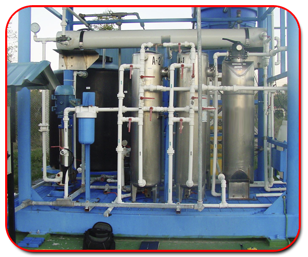
Norma NB 512Sistemas modulares en estructura metálica transportable diseñados bajo Norma Boliviana NB 512. Incluye etapas completas de coagulación, floculación, sedimentación acelerada, filtración multimedia y desinfección.
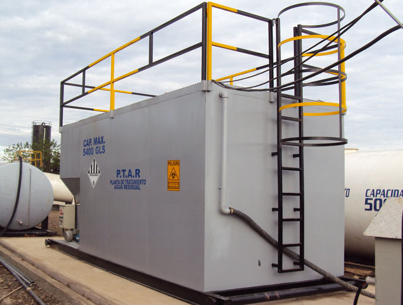
Efluentes CríticosUnidades robustas y polivalentes para depurar residuos industriales complejos: desbaste, filtración, tratamiento físico-químico, separación de aceites e hidrocarburos (DAF) y evaporación.
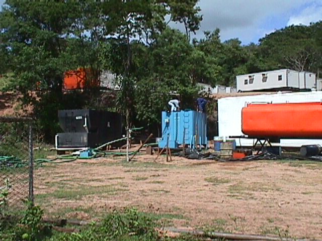
Ley 1333Plantas Depuradoras de Agua (PDA) Serie C (comerciales) y Serie D (domésticas) para tratamientos biológicos y fisicoquímicos, cumpliendo con los límites permisibles de descarga de la Ley 1333.
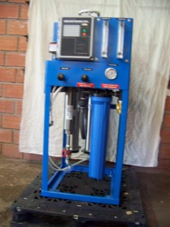
Ultra PurezaProceso de separación molecular por membrana para desmineralización de agua, vital en calderas de alta presión, embotelladoras, farmacéutica y concentración de jugos/alimentos.
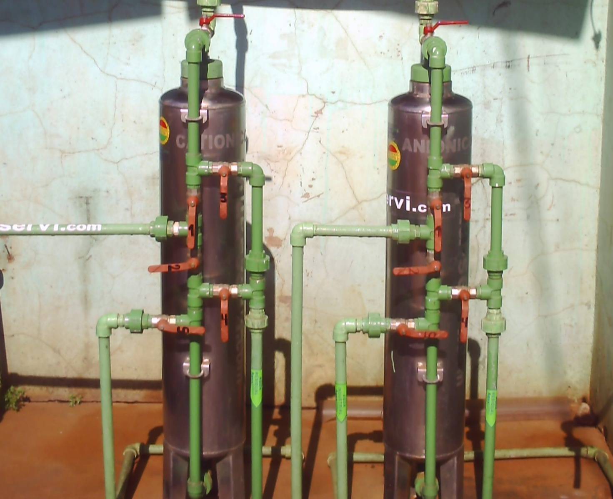
Modelo SDACompuesto por dos columnas intercambiadoras de iones en serie: columna catiónica (sustituye Ca, Mg, Na por H+) y columna aniónica (sustituye sulfatos, cloruros por OH-), logrando agua desionizada de alta resistividad.
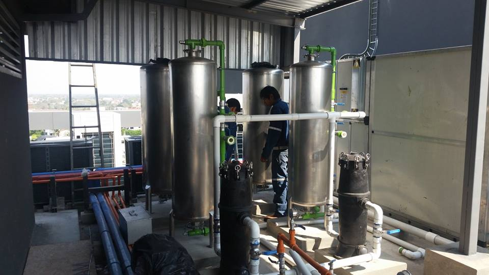
Cero SarroIntercambiador de cationes regenerado con salmuera que elimina los iones de calcio y magnesio. Previene incrustaciones severas de sarro en calderos, intercambiadores de calor y torres de enfriamiento.
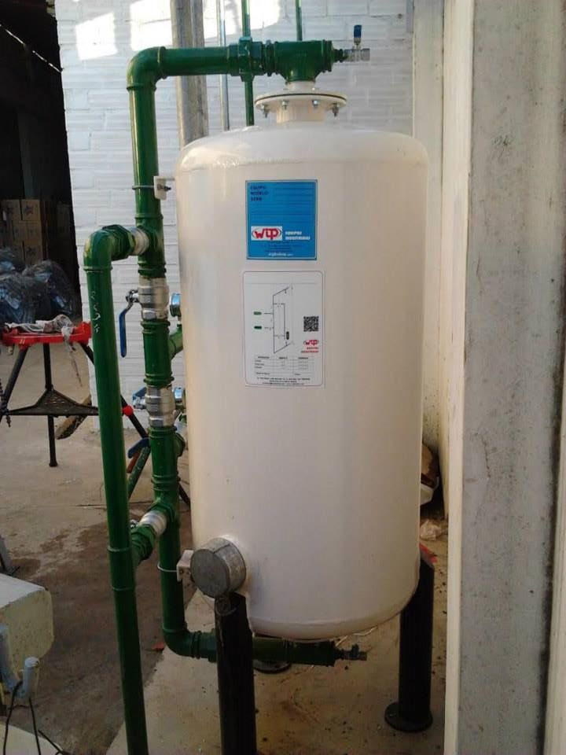
20 MicrasElemento esencial para la remoción de sólidos en suspensión, turbidez y partículas hasta 20 micras. Provisto de válvula multivía para retrolavado y enjuague rápido y eficiente.
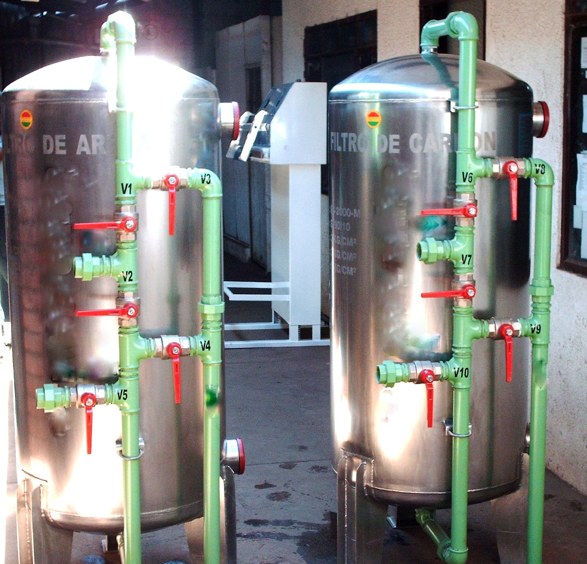
Adsorción Físico-QuímicaMódulo provisto de carbón activado natural de alta porosidad que atrae, captura y descompone moléculas de cloro residual, solventes, olores, sabores desagradables y microcontaminantes orgánicos.
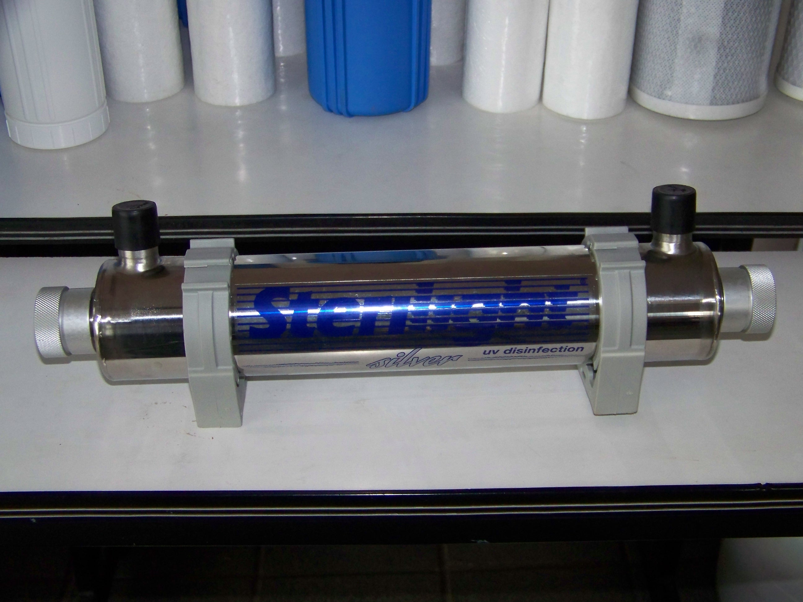
Esterilización 254nmPurificación bacteriológica instantánea sin incorporar químicos residuales. Lámpara germicida que destruye ADN de bacterias, virus, quistes y coliformes presentes en el agua.
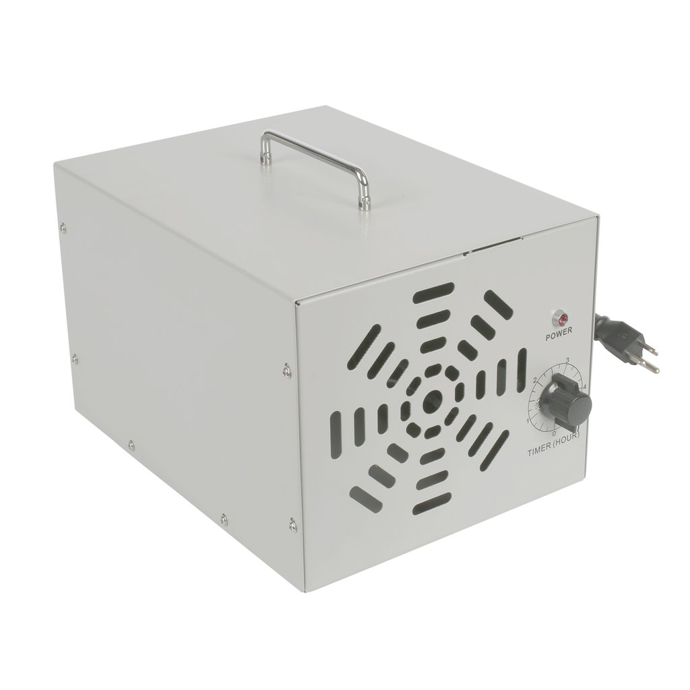
3000x Más RápidoPoder oxidante 3000 veces más rápido que el cloro. Descompone materia orgánica e inorgánica al instante, dejando como único residuo oxígeno puro sin alterar sabor ni pH.
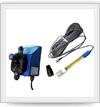
Dosificación ExactaLigeras y de máxima confiabilidad para dosificación continua de coagulantes, floculantes, hipoclorito, aminas, polímeros y fluidos agresivos en procesos industriales continuos.
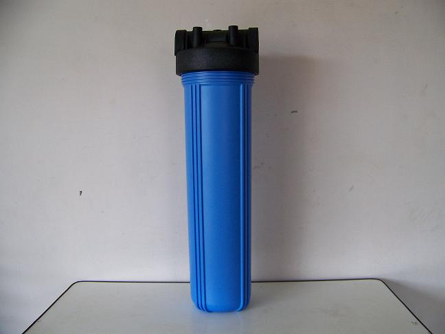
NSF / FDALíderes en calidad con polipropileno grado alimenticio certificado FDA/NSF. Diseñadas para presiones de hasta 125 psi (8.75 bar) y 52°C (125°F). Disponibles en Slim y Big Blue con juntas tóricas estándar.
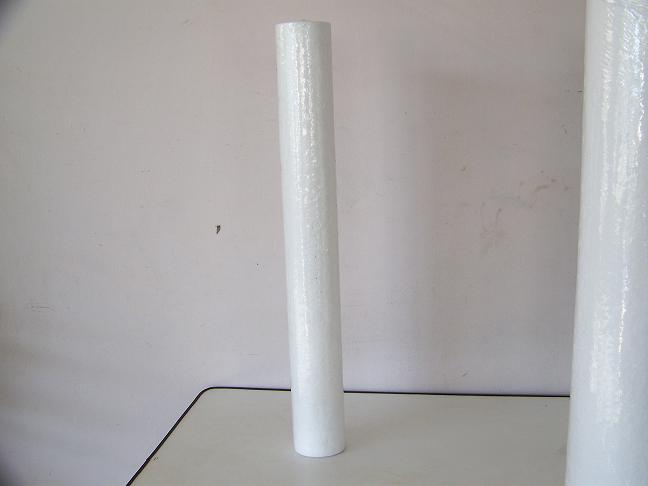
SedimentosCartuchos de espuma pura de polipropileno. Resistencia química excepcional, idóneos para filtración de partículas finas, químicos agresivos y pretratamiento de purificadores.
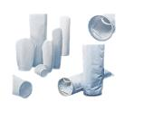
Alto CaudalDiseñados para soportar grandes caudales con altas concentraciones de sólidos a un bajísimo costo. Amplia variedad de medios filtrantes (polipropileno, poliéster, nylon).
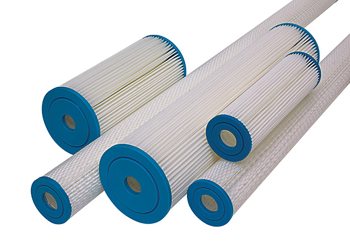
Lavables / ReutilizablesEstructura plisada de poros graduados que maximiza la superficie de filtración y retención de sedimentos. Exentos de tensioactivos, aglutinantes y adhesivos. Lavables y de larga vida útil.
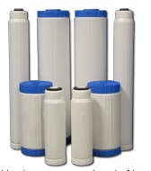
PersonalizableCartuchos rellenables que se adaptan a portafiltros estándar para ser llenados con el medio de filtración requerido (resina, carbón, KDF). Incluyen prefiltro integrado de 100 µm y postfiltro de 20 µm.
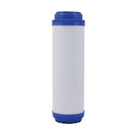
Pentair Pentek SCBC-10Cartuchos Pentair Pentek* tratados para inhibir biofilmes y bacterias. Reducción certificada de cloro, sabor y olor: 12 psi a 1 gpm (>20.000 galones / 75.700 L) con prefiltro protector.